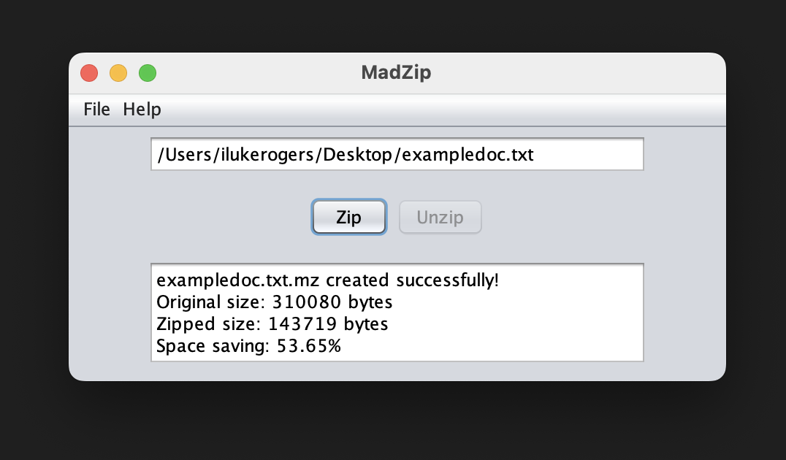

File Compressor
What I Made
Project Description: This project focused on developing a Huffman encoding and decoding system in Java, which compresses and decompresses data efficiently. The program was built around several key classes. BitSequence.java was responsible for handling sequences of bits, allowing manipulation and storage as needed. The HuffmanNode class represented each node in the Huffman tree, including its frequency and child nodes (left and right).
The HuffmanTree class constructed the Huffman tree itself, encoding symbols based on their frequencies. A utility class, HuffmanTreeFileUtil, managed reading and writing files into Huffman-encoded objects, while the Zip.java class handled file compression and decompression. The project also featured a GUI for an easy-to-use interface, enabling users to select files for compression or decompression.
What I Learned?
This project deepened my understanding of data structures and their applications in real-world scenarios, especially in the context of efficient data compression. I gained hands-on experience with various data structures, learning how to select the most suitable ones for different tasks based on their characteristics. Additionally, I learned how to design custom data structures to fit specific needs, balancing functionality and performance. This strengthened my skills in managing both memory and processing time when dealing with bit-level operations and file manipulation.Project information
- Category File Compression
- Class Data Structure & Algorithms
- Project date March 2023